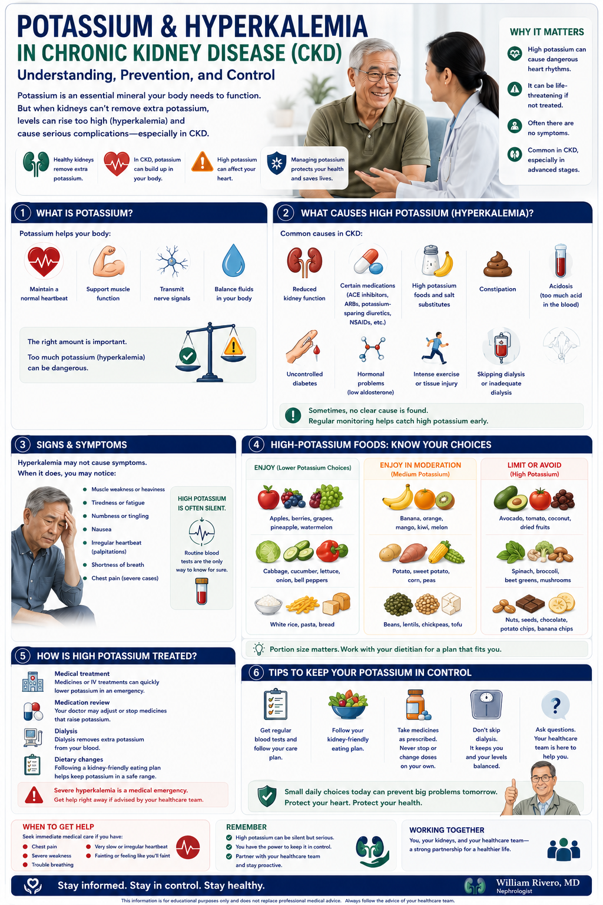
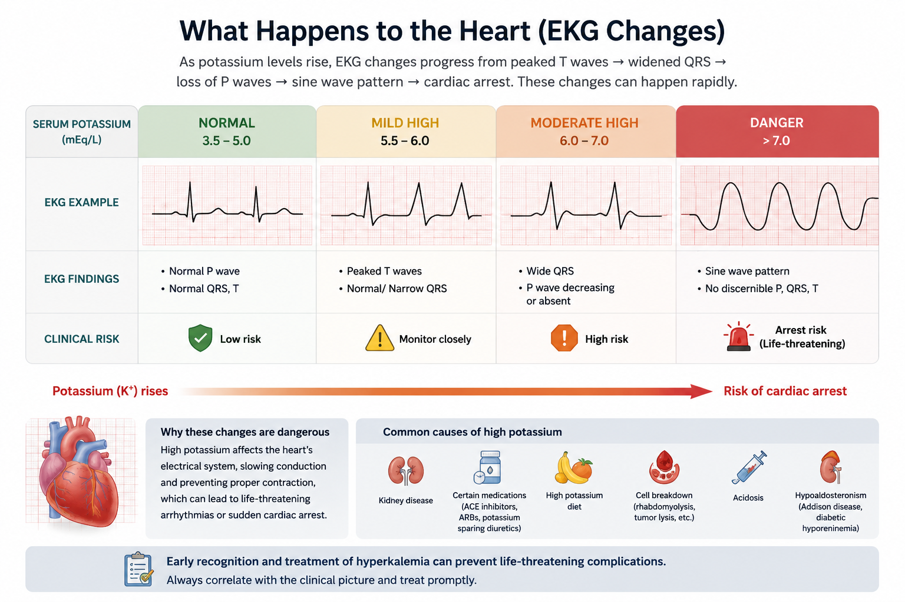

Potassium: The Mineral That Runs Your Heart Potassium: Ang Mineral na Nagpapatakbo ng Iyong Puso Potassium: Ang Mineral nga Nagpadagan sa Imong Kasingkasing Potassium: Ing Mineral a Nagpapatakbo ning Pusong Mo

Potassium is not optional — your heart needs it to beat. But there is a narrow range where it works: 3.5–5.0 mEq/L in healthy people. In CKD, the kidneys lose their ability to excrete excess potassium, causing it to accumulate in the blood. When potassium rises above 5.5 mEq/L, it begins to disrupt the electrical system of the heart — potentially causing fatal arrhythmias without any warning. Ang potassium ay hindi opsyonal — kailangan ito ng iyong puso para tumibok. Ngunit may makitid na saklaw kung saan ito gumagana: 3.5–5.0 mEq/L sa mga malusog na tao. Sa CKD, nawawalan ang mga bato ng kakayahang mag-excrete ng labis na potassium, na nagdudulot ng pag-iipon nito sa dugo. Kapag tumaas ang potassium nang higit sa 5.5 mEq/L, nagsisimula itong guluhin ang electrical system ng puso. Ang potassium dili opsyonal — gikinahanglan kini sa imong kasingkasing aron mobunal. Apan adunay higpit nga saklaw diin kini molihok: 3.5–5.0 mEq/L sa himsog nga mga tawo. Sa CKD, nawad-an ang mga kidney sa abilidad nga mag-excrete sa sobra nga potassium, nga nagdala sa pagtipon niini sa dugo. Ing potassium hindi opsyonal — kailangan iti ning pusong mo para tumibok. Ngunit maki makipot a saklaw kung nanu iti gumagawa: 3.5–5.0 mEq/L king deng malusog a tao. King CKD, nawawalan deng batu ning kakayahang mag-excrete ning labis a potassium, na nagdudulot ning pag-iipon niti king dala.
Normal FunctionNormal na TungkulinNormal nga KatungdananNormal a Tungkulin
Regulates heart rhythm, nerve signals, and muscle contractions. Controls fluid balance inside and outside cells. Essential for normal blood pressure.Nag-regulate ng ritmo ng puso, mga signal ng nerbyo, at pagkikibo ng kalamnan. Kinokontrol ang balanse ng likido sa loob at labas ng mga selula.Nag-regulate sa ritmo sa kasingkasing, mga signal sa nerbyo, ug kontraksiyon sa kalamnan. Nagkontrol sa balanse sa likido sulod ug gawas sa mga selula.Nag-regulate ning ritmo ning puso, deng signal ning nerbyo, at pagkikibo ning kalamnan. Nagkontrol ning balanse ning likido king laub at labas ning deng selula.
In CKDSa CKDSa CKDKing CKD
Damaged kidneys cannot excrete potassium efficiently. As eGFR falls — especially below 30 — even modest dietary potassium intake causes blood levels to rise dangerously.Hindi mahusay na ma-excrete ng mga nasirang bato ang potassium. Habang bumababa ang eGFR — lalo na sa ibaba ng 30 — kahit katamtamang paggamit ng potassium sa pagkain ay nagdudulot ng mapanganib na pagtaas.Ang mga nadaot nga kidney dili mahimo mag-excrete sa potassium nga episyente. Samtang mohulog ang eGFR — ilabi na sa ubos sa 30 — bisan ang gamay nga pagkaon nga potassium nagdala sa mapanganib nga pagtaas.Deng nadaot a batu hindi maayos mag-excrete ning potassium. Habang bumabagsak ing eGFR — lalu na sa ilalam ning 30 — kahit katamtamang paggamit ning potassium king pagkain nagdudulot ning mapanganib a pagtaas.
On DialysisSa DialysisSa DialysisKing Dialysis
Dialysis removes potassium during sessions, but between sessions (especially after long breaks like the weekend gap) potassium builds up rapidly. Diet discipline between sessions is critical.Inaalis ng dialysis ang potassium sa mga sesyon, ngunit sa pagitan ng mga sesyon — lalo na pagkatapos ng matagal na pahinga tulad ng weekend gap — mabilis na naipon ang potassium.Ang dialysis nagkuha sa potassium sa mga sesyon, apan tali sa mga sesyon — ilabi na pagkahuman sa taas nga pahinga sama sa weekend gap — paspas nga natigom ang potassium.Inaalis ning dialysis ing potassium king deng sesyon, ngunit king pagtali ning deng sesyon — lalu na pagkatapos ning matagal a pahinga tulad ning weekend gap — mabilis a naiipon ing potassium.
Why Does CKD Cause High Potassium? Bakit Nagdudulot ng Mataas na Potassium ang CKD? Ngano nga Nagdala sa Taas nga Potassium ang CKD? Bakit Nagdudulot ning Mataas a Potassium ing CKD?
Healthy kidneys filter and excrete about 90% of the body's daily potassium intake. As kidney function declines, this capacity shrinks — creating a perfect storm of accumulation. Several CKD-specific factors make things worse: Ang mga malusog na bato ay nag-filter at nag-excrete ng humigit-kumulang 90% ng pang-araw-araw na paggamit ng potassium ng katawan. Habang bumababa ang pag-andar ng bato, lumiit ang kakayahang ito. Ang himsog nga mga kidney nag-filter ug nag-excrete og mga 90% sa adlaw-adlaw nga pagkonsumo sa potassium sa lawas. Samtang mohulog ang pag-andar sa kidney, kining kapasidad miubos. Deng malusog a batu nag-filter at nag-excrete ning mga 90% ning pang-araw-araw a paggamit ning potassium ning katawan. Habang bumabagsak ing paggawa ning batu, lumiit iting kakayahan.
Reduced GFR — less filtering capacityNabawasan na GFR — mas kaunting kapasidad sa pag-filterNabawasan nga GFR — mas gamay nga kapasidad sa pag-filterNabawasan a GFR — mas kaunting kakayahan king pag-filter
Fewer functional nephrons means less potassium secreted into urine per day. By Stage 4 CKD (eGFR 15–29), even a single banana can push potassium above safe levels.Ang mas kaunting functional nephrons ay nangangahulugang mas kaunting potassium na nagtatago sa ihi bawat araw. Sa Stage 4 CKD, kahit isang saging ay maaaring magtulak ng potassium sa itaas ng ligtas na antas.Mas gamay nga functional nephrons nagpasabot nga mas gamay nga potassium ang gitago sa ihi matag adlaw. Sa Stage 4 CKD, bisan usa ka saging makapahitabo sa potassium nga molapas sa luwas nga lebel.Mas kaunting functional nephrons ibig sabihin mas kaunting potassium a nagtatatago king ihi kada araw. King Stage 4 CKD, kahit metung a saging makakapag-push ning potassium sa itaas ning ligtas a antas.
Metabolic acidosis — potassium shifts out of cellsMetabolic acidosis — lumilipat ang potassium palabas ng mga selulaMetabolic acidosis — ang potassium mobalhin gawas sa mga selulaMetabolic acidosis — lumilipat ing potassium palabas ning deng selula
CKD causes acid to build up in the blood (metabolic acidosis). In response, the body pushes potassium out of cells into the bloodstream — raising serum levels even without extra dietary intake. Correcting acidosis (with sodium bicarbonate) lowers potassium.Ang CKD ay nagdudulot ng pag-iipon ng acid sa dugo. Bilang tugon, itinutulak ng katawan ang potassium palabas ng mga selula patungo sa daloy ng dugo — nagpapalaki ng serum levels kahit walang dagdag na paggamit sa pagkain.Ang CKD nagdala sa pag-iipon sa acid sa dugo (metabolic acidosis). Isip tubag, giitsa sa lawas ang potassium gawas sa mga selula ngadto sa dugo — nagpataas sa mga serum levels bisan walay dugang nga pagkonsumo sa pagkaon.Ing CKD nagdudulot ning pag-iipon ning acid king dala (metabolic acidosis). Bilang tugon, itinutulak ning katawan ing potassium palabas ning deng selula patungo king daloy ning dala — nagpapalaki ning serum levels kahit wala pang dagdag a paggamit king pagkain.
Medications — ACE inhibitors, ARBs, and potassium-sparing diureticsMga Gamot — ACE inhibitors, ARBs, at potassium-sparing diureticsMga Tambal — ACE inhibitors, ARBs, ug potassium-sparing diureticsDeng Gamut — ACE inhibitors, ARBs, at potassium-sparing diuretics
ACE inhibitors (lisinopril, enalapril) and ARBs (losartan, irbesartan, telmisartan) — essential for protecting kidneys — also reduce potassium excretion as a side effect. Spironolactone, finerenone, and NSAIDs compound this further. Your doctor balances kidney protection against potassium risk.Ang mga ACE inhibitor at ARB — mahalaga para protektahan ang mga bato — nagbabawas din ng excretion ng potassium bilang side effect. Ang spironolactone, finerenone, at NSAIDs ay nagpapalala pa nito.Ang mga ACE inhibitor ug ARB — hinungdanon para protektahan ang mga kidney — nagkunhod usab sa excretion sa potassium isip side effect. Ang spironolactone, finerenone, ug NSAIDs nagpalala niini.Deng ACE inhibitor at ARB — mahalaga para protektahan deng batu — nagbabawas din ning excretion ning potassium bilang side effect. Ing spironolactone, finerenone, at deng NSAID nagpapalala pa niti.
Diabetes — insulin deficiency impairs potassium uptakeDiabetes — ang kakulangan ng insulin ay nagpipigil sa pagsipsip ng potassiumDiabetes — ang kakulang sa insulin nagpugong sa pag-uptake sa potassiumDiabetes — ing kakulangan ning insulin nagpipigil king pagsipsip ning potassium
Insulin normally drives potassium back into cells after a meal. In diabetes with poor glucose control, this mechanism is impaired — potassium stays in the bloodstream longer after eating. This is why blood sugar control is also part of hyperkalemia management.Ang insulin ay karaniwang nagdadala ng potassium pabalik sa mga selula pagkatapos kumain. Sa diabetes na may mahinang kontrol ng glucose, ang mekanismong ito ay nasisira.Ang insulin kasagaran nagdala sa potassium balik sa mga selula pagkahuman sa pagkaon. Sa diabetes nga adunay dili maayong kontrol sa glucose, kining mekanismo nabali.Ing insulin karaniwang nagdadala ning potassium pabalik king deng selula pagkatapos kumain. King diabetes a maki mahinang kontrol ning glucose, iting mekanismo nasira.
Symptoms of High Potassium Mga Sintomas ng Mataas na Potassium Mga Sintomas sa Taas nga Potassium Deng Sintomas ning Mataas a Potassium
Hyperkalemia is often silent until it is criticalAng hyperkalemia ay madalas na walang sintomas hanggang sa kritikal naAng hyperkalemia kasagaran hilom hangtod nga kritikal na kiniIng hyperkalemia madalas a walang sintomas anggang kritikal na
Many patients with potassium of 6.0–6.5 mEq/L feel completely normal. The first symptom may be a life-threatening heart arrhythmia. This is why regular blood tests — not how you feel — determine safety. Never assume you are fine because you feel fine.Maraming pasyente na may potassium na 6.0–6.5 mEq/L ay nakakaramdam ng ganap na normal. Ang unang sintomas ay maaaring isang banta sa buhay na arrhythmia ng puso. Kaya naman ang regular na pagsusuri sa dugo — hindi kung paano ka nakakaramdam — ang nagtatakda ng kaligtasan.Daghang pasyente nga adunay potassium nga 6.0–6.5 mEq/L mobati nga hingpit nga normal. Ang unang sintomas mahimong usa ka banta sa kinabuhi nga arrhythmia sa kasingkasing. Mao kini ngano nga ang regular nga pagsusuri sa dugo — dili kung unsay imong gibati — nagtino sa kaluwasan.Daramihan a pasyente a maki potassium a 6.0–6.5 mEq/L nakakaramdam ning ganap a normal. Ing unang sintomas maaaring metung a banta king buhay a arrhythmia ning puso. Kaya naman ing regular a pagsusuri king dala — hindi kung panung mo nararamdaman — ing nagtutukoy ning kaligtasan.
Mild to Moderate (5.5–6.5 mEq/L)Banayad hanggang KatamtamanLeve hangtod KatamtamanBanayad anggang Katamtaman
Often no symptoms. Some patients notice: muscle weakness or fatigue, tingling or numbness in hands/feet, mild nausea. May only be detected on routine blood test.Madalas na walang sintomas. Napapansin ng ilang pasyente ang: kahinaan ng kalamnan o pagod, pangingilig o pamamanhid sa mga kamay/paa, banayad na pagduduwal.Kasagaran walay sintomas. Pipila ka pasyente namatikdan: kahuyang sa kalamnan o kapoy, pangangalog o kalanot sa mga kamot/tiil, leve nga pagbati og dili maayo sa tiyan.Madalas a walang sintomas. Deng ilang pasyente nakapansin: kahinaan ning kalamnan o pagod, pangingilig o pamamanhid king deng kamay/saka, banayad a pagduduwal.
Severe (>6.5 mEq/L) — EmergencyMalubha (>6.5 mEq/L) — EmergencyGrabe (>6.5 mEq/L) — EmergencyMalubha (>6.5 mEq/L) — Emergency
Progressive muscle weakness (difficulty standing, arm weakness), heart palpitations, chest tightness, shortness of breath, paralysis. EKG changes appear. Fatal cardiac arrest can occur suddenly.Progresibong kahinaan ng kalamnan (hirap sa pagtayo, kahinaan ng braso), palpitasyon ng puso, higpit sa dibdib, pangangapos ng hininga, paralysis. Nagmamakita ng mga pagbabago sa EKG. Maaaring maganap ang biglang cardiac arrest.Progresibo nga kahuyang sa kalamnan (kalisod sa pagtindog, kahuyang sa bukton), palpitasyon sa kasingkasing, higpit sa dughan, kakulang sa gininhawa, paralysis. Ang mga pagbabago sa EKG nagpakita. Mahimong mahitabo ang kalit nga cardiac arrest.Progresibong kahinaan ning kalamnan (hirap sa pagtayo, kahinaan ning braso), palpitasyon ning puso, higpit king dibdib, pangangapos ning hininga, paralisis. Nagpapakita deng pagbabago king EKG. Maaaring mangyari ing biglang cardiac arrest.
What Happens to the Heart (EKG Changes) Ano ang Nangyayari sa Puso (Mga Pagbabago sa EKG) Unsa ang Mahitabo sa Kasingkasing (Mga Pagbabago sa EKG) Nanung Nangyayari king Puso (Deng Pagbabago king EKG)

Target Potassium Levels by Stage Mga Target na Antas ng Potassium ayon sa Yugto Mga Target nga Lebel sa Potassium Matag Yugto Deng Target a Antas ning Potassium Batay king Yugto
| Patient TypeUri ng PasyenteMatang PasyenteKlase ning Pasyente | Target RangeTarget na SaklawTarget nga SaklawTarget a Saklaw | Why This TargetBakit Ang Target na ItoNgano Kining TargetBakit Iting Target |
|---|---|---|
| CKD Stages 1–3CKD Yugto 1–3CKD Yugto 1–3CKD Yugto 1–3 | 3.5–5.0 mEq/L | Kidneys still compensate; diet restriction usually not needed unless trend risingAng mga bato ay nakaka-compensate pa; karaniwang hindi kailangan ang paghihigpit sa pagkain maliban kung tumataas ang trendAng mga kidney nakaka-compensate pa; dili kasagaran kinahanglan ang pagdili sa pagkaon gawas kon motubo ang trendDeng batu nakaka-compensate pa; karaniwang hindi kailangan ing paghihigpit king pagkain maliban kung tumataas ing trend |
| CKD Stages 4–5 (pre-dialysis)CKD Yugto 4–5 (bago ang dialysis)CKD Yugto 4–5 (wala pa ang dialysis)CKD Yugto 4–5 (bago ning dialysis) | 3.5–5.0 mEq/L | Strict dietary potassium limit needed (usually 1,500–2,000 mg/day); medications often requiredKailangan ang mahigpit na limitasyon ng potassium sa pagkain (karaniwang 1,500–2,000 mg/araw); madalas kailangan ang mga gamotKinahanglan ang higpit nga limitasyon sa potassium sa pagkaon (kasagaran 1,500–2,000 mg/adlaw); kasagaran kinahanglan ang mga tambalKailangan ing mahigpit a limitasyon ning potassium king pagkain (karaniwang 1,500–2,000 mg/araw); madalas kailangan deng gamut |
| HemodialysisHemodialysisHemodialysisHemodialysis | Pre-HD: 3.5–5.5 mEq/L | Dialysis removes K; pre-HD level reflects diet between sessions. Post-HD hypokalemia also dangerous. Aim for pre-HD K below 5.5.Ang dialysis ay nag-aalis ng K; ang pre-HD na antas ay sumasalamin sa diyeta sa pagitan ng mga sesyon. Ang post-HD na hypokalemia ay mapanganib din.Ang dialysis nagkuha sa K; ang pre-HD nga lebel nagpakita sa pagkaon tali sa mga sesyon. Ang post-HD nga hypokalemia delikado usab.Ang dialysis nag-aalis ning K; ing pre-HD a antas sumasalamin king diyeta sa pagtali ning deng sesyon. Ing post-HD a hypokalemia mapanganib din. |
Managing Potassium Through Filipino Food Choices Pamamahala ng Potassium sa Pamamagitan ng mga Pagpipilian ng Pagkain ng Pilipino Pagdumala sa Potassium Pinaagi sa mga Pagpipilian sa Pagkaon sa Pilipino Pamamahala ning Potassium King Pamamagitan ning deng Pagpipilian ning Pagkain ning Pilipino
The typical Filipino diet is high in potassium — bananas, kamote, coconut water, kangkong, squash, and mongo are everyday staples. These must be managed carefully in CKD Stage 4–5 and on dialysis. The daily limit is generally 1,500–2,000 mg/day for advanced CKD. Ang tipikal na diyeta ng Pilipino ay mataas sa potassium — saging, kamote, buko juice, kangkong, kalabasa, at mongo ay mga pang-araw-araw na pagkain. Ang pang-araw-araw na limitasyon ay karaniwang 1,500–2,000 mg/araw para sa advanced CKD. Ang tipikal nga diyeta sa Pilipino taas sa potassium — saging, kamote, buko juice, kangkong, kalabasa, ug mongo mga adlaw-adlaw nga pagkaon. Ang adlaw-adlaw nga limitasyon kasagaran 1,500–2,000 mg/adlaw alang sa advanced CKD. Ing tipikal a diyeta ning Pilipino mataas king potassium — saging, kamote, buko juice, kangkong, kalabasa, at mongo deng pang-araw-araw a pagkain. Ing pang-araw-araw a limitasyon karaniwang 1,500–2,000 mg/araw para king advanced CKD.
🚫 High Potassium — AVOID or LIMIT STRICTLYMataas na Potassium — IWASAN o LIMITAHAN NG MAHIGPITTaas nga Potassium — LIKAYAN o LIMITAHAN NG MAHIGPITMataas a Potassium — IWASAN o LIMITAHAN MAHIGPIT
- Banana / Saging (358mg each)Saging (358mg bawat isa)Saging (358mg matag usa)Saging (358mg kada metung)
- Kamote / Sweet potato (437mg/100g)Kamote (437mg/100g)Kamote (437mg/100g)Kamote (437mg/100g)
- Buko juice / Coconut water (600mg/cup)Buko juice (600mg/tasa)Buko juice (600mg/tasa)Buko juice (600mg/tasa)
- Avocado (975mg each)Abokado (975mg bawat isa)Abokado (975mg matag usa)Abokado (975mg kada metung)
- Kamias, tomato, squash / kalabasaKamias, kamatis, kalabasaKamias, kamatis, kalabasaKamias, kamatis, kalabasa
- Mongo / Mung beans, all dried beans/lentilsMongo, lahat ng tuyo na beans/lentilsMongo, tanan nga uga nga beans/lentilsMongo, sablang tuyo a beans/lentils
- Kangkong, malunggay, ampalayaKangkong, malunggay, ampalayaKangkong, malunggay, ampalayaKangkong, malunggay, ampalaya
- Dried fish (tuyo) — very concentratedTuyo — napaka-concentratedTuyo — kaayo ka concentratedTuyo — napaka-concentrated
✅ Low Potassium — Generally SafeMababang Potassium — Karaniwang LigtasUbos nga Potassium — Kasagaran LuwasMababang Potassium — Karaniwang Ligtas
- White rice (well-rinsed)Puting bigas (hugasang mabuti)Puting bugas (hugasan nga maayo)Puting bigas (hugasan nang maayus)
- Cassava / Kamoteng kahoy (small portion)Kamoteng kahoy (maliit na bahagi)Kamoteng kahoy (gamay nga bahin)Kamoteng kahoy (maliit a bahagi)
- White bread, noodles (plain)Puting tinapay, noodles (plain)Puting tinapay, noodles (plain)Puting tinapay, noodles (plain)
- Egg white (yolk has more K)Puti ng itlog (ang pula ay mas maraming K)Puti sa itlog (ang pula adunay daghang K)Puti ning itlog (ing pula maki mas dakal K)
- Sayote / Chayote (leached)Sayote (binalatan at pinakulo)Sayote (linabhan)Sayote (linabhan)
- Cabbage, upo, sitaw (leached)Repolyo, upo, sitaw (binabad)Repolyo, upo, sitaw (linabhan)Repolyo, upo, sitaw (linabhan)
- Small portions of lean pork or fishMaliit na bahagi ng payat na baboy o isdaGamay nga bahin sa payat nga baboy o isdaMaliit a bahagi ning payat a baboy o isda
Leaching — the cooking trick that reduces potassium in vegetablesLeaching — ang paraan ng pagluluto na nagbabawas ng potassium sa mga gulayLeaching — ang paagi sa pagluto nga nagkunhod sa potassium sa mga utanLeaching — ing paraan ning pagluto a nagbabawas ning potassium king deng gulay
- Peel and slice vegetables thinBalatan at manipis na hiwain ang mga gulayPanitan ug nipis nga hiwaon ang mga utanBalatan at manipis a hiwaon deng gulay
- Soak in warm water for 2–4 hours (change water twice)Ibabad sa mainit na tubig ng 2–4 oras (palitan ng tubig nang dalawang beses)Ibabad sa mainit nga tubig og 2–4 ka oras (ilisan ang tubig kaduha)Ibabad king mainit a tubig ning 2–4 oras (palitan ning tubig nang adwang beses)
- Drain, rinse, then boil in fresh water — discard the water, never use as soup baseAlisan ng tubig, banlawan, pagkatapos pakuluan sa sariwang tubig — itapon ang tubig, huwag gamitin bilang base ng sabawPatubigan, hugasan, pagkahuman pakuloon sa bag-ong tubig — isalibay ang tubig, dili gamiton isip base sa sabawAlisan ning tubig, banlawan, pagkatapos pakuluan king sariwang tubig — itapon ing tubig, huwag gamitin bilang base ning sabaw
- Leaching reduces potassium by 30–50% — not perfect, but helpfulAng leaching ay nagbabawas ng potassium ng 30–50% — hindi perpekto, ngunit nakakatulongAng leaching nagkunhod sa potassium og 30–50% — dili perpekto, apan makatabangIng leaching nagbabawas ning potassium ning 30–50% — hindi perpekto, ngunit makatulong
Potassium content of common Filipino foodsNilalaman ng potassium sa mga karaniwang pagkaing PilipinoSulod sa potassium sa mga kasagarang pagkaong PilipinoLaman ning potassium king mga kasagarang pagkaing Pilipino
Use this table to compare actual potassium content (in milligrams per typical Filipino serving). Daily target for most CKD G3b–5 and dialysis patients is roughly 1,500–2,000 mg/day — a single banana plus a cup of buko juice can blow past it. Values are averages; ripeness, soil, and cooking method change the numbers.Gamitin ang talahanayan na ito para ihambing ang aktwal na nilalaman ng potassium (sa milligram bawat karaniwang servings na Pilipino). Ang araw-araw na target para sa karamihan ng pasyenteng CKD G3b–5 at dialysis ay halos 1,500–2,000 mg/araw — kahit isang saging at tasa ng buko juice ay maaaring lumampas dito.Gamita kining lamesa aron ikumpara ang aktwal nga sulod sa potassium matag kasagarang servings nga Pilipino. Ang adlaw-adlaw nga target alang sa kasagaran nga pasyente sa CKD G3b–5 ug dialysis 1,500–2,000 mg/adlaw.Gamitan ing talaang iti para ipangasi ing aktwal a laman ning potassium. Ing aldo-aldo a target 1,500–2,000 mg/aldo.
FruitsMga prutasMga prutasMga prutas
| Food | Serving | Potassium | Risk |
|---|---|---|---|
| Buko juice (fresh / pre-mixed) | 1 cup (240 mL) | ~600 mg | VERY HIGH |
| Saba (banana, boiled / minatamis) | 1 large piece | ~530 mg | VERY HIGH |
| Lakatan / latundan banana | 1 medium | ~440 mg | VERY HIGH |
| Avocado / abukado | 1/2 fruit | ~485 mg | VERY HIGH |
| Durian | 100 g | ~440 mg | VERY HIGH |
| Cantaloupe / melon | 1 cup cubes | ~430 mg | VERY HIGH |
| Papaya, ripe | 1 cup cubes | ~360 mg | HIGH |
| Watermelon / pakwan | 1 cup cubes | ~170 mg | MODERATE (high water) |
| Mango (manggang hilaw or hinog) | 1 cheek (~80 g) | ~135 mg | MODERATE |
| Pineapple / pinya, fresh | 1 cup cubes | ~180 mg | MODERATE |
| Lansones, rambutan, lychee | 10 small pcs | ~150 mg | MODERATE |
| Apple (small) | 1 fruit | ~110 mg | SAFE |
| Pear (small) | 1 fruit | ~125 mg | SAFE |
| Grapes (red or green) | 15 pieces | ~140 mg | SAFE |
| Calamansi juice (fresh, no salt) | 1 cup diluted | ~100 mg | SAFE |
VegetablesMga gulayMga utanonMga gulay
| Food | Serving | Potassium | Risk |
|---|---|---|---|
| Kamote tops (talbos ng kamote) | 1 cup cooked | ~620 mg | VERY HIGH |
| Kamote (sweet potato) | 1 medium | ~540 mg | VERY HIGH |
| Kalabasa / squash | 1 cup cooked | ~510 mg | VERY HIGH |
| Malunggay leaves | 1 cup cooked | ~470 mg | VERY HIGH |
| Tomato sauce / sinigang mix | 1/2 cup | ~450 mg | VERY HIGH |
| Kangkong (raw or sautéed) | 1 cup cooked | ~410 mg | VERY HIGH |
| Patatas / potato (boiled, not leached) | 1 medium | ~610 mg | VERY HIGH |
| Talong / eggplant (cooked) | 1 cup | ~250 mg | MODERATE |
| Pechay, mustasa, kangkong stem | 1 cup cooked | ~240 mg | MODERATE |
| Sitaw (string beans) | 1 cup cooked | ~210 mg | MODERATE |
| Sayote (chayote, leached) | 1 cup cooked | ~125 mg | SAFE |
| Upo (bottle gourd) | 1 cup cooked | ~150 mg | SAFE |
| Repolyo (cabbage) | 1 cup raw | ~150 mg | SAFE |
| Cucumber / pipino | 1 cup sliced | ~150 mg | SAFE |
| Singkamas (jicama) | 1 cup raw | ~180 mg | SAFE |
| Labanos (white radish) | 1 cup sliced | ~130 mg | SAFE |
Meat, fish, beansKarne, isda, beansKarne, isda, beansKarne, asan, beans
| Food | Serving | Potassium | Risk |
|---|---|---|---|
| Tuyo / dried fish | 30 g | ~590 mg | VERY HIGH |
| Daing na bangus | 100 g | ~450 mg | VERY HIGH |
| Bangus (fresh, grilled) | 100 g | ~420 mg | HIGH |
| Atay ng manok / liver | 100 g | ~320 mg | HIGH |
| Pork (lean, lechon kawali) | 100 g | ~360 mg | HIGH |
| Munggo (mung beans, cooked) | 1 cup | ~540 mg | VERY HIGH |
| Tokwa (tofu) | 100 g | ~140 mg | MODERATE |
| Chicken breast (boiled, no skin) | 100 g | ~250 mg | MODERATE |
| Tilapia (grilled) | 100 g | ~300 mg | MODERATE |
| Egg (whole) | 1 large | ~70 mg | SAFE |
Drinks & flavourMga inumin at panlasaMga ilimnon ug lamiMga inumin at panlasa
| Food | Serving | Potassium | Risk |
|---|---|---|---|
| Buko juice / coconut water | 1 cup | ~600 mg | VERY HIGH (avoid) |
| Salt substitute (lite salt, "low-sodium" salt) | 1 tsp | ~2,500 mg KCl! | EXTREME — never use in CKD |
| Tomato juice / V8 | 1 cup | ~550 mg | VERY HIGH |
| Coconut milk (gata) | 1/2 cup | ~250 mg | MODERATE |
| Mango shake (with milk) | 1 glass | ~340 mg | HIGH |
| Brewed coffee | 1 cup | ~115 mg | MODERATE |
| Plain tea | 1 cup | ~90 mg | SAFE |
| Calamansi juice (no salt) | 1 cup diluted | ~100 mg | SAFE |
| Bottled water / sparkling water | 1 cup | negligible | SAFE |
A worked 1,800 mg/day Filipino plateHalimbawa: 1,800 mg/araw na Filipino platePanig-ingnan: 1,800 mg/adlaw nga Filipino plateHalimbawa: 1,800 mg/aldo a Filipino plate
Breakfast: 1 cup white rice (~55 mg) + 1 boiled egg (~70 mg) + 1 small apple (~110 mg) = ~235 mg.
Lunch: 1 cup rice (~55 mg) + 100 g grilled tilapia (~300 mg) + 1 cup leached sayote & upo (~270 mg) = ~625 mg.
Snack: 30 g rice crackers + 15 grapes (~140 mg) + cup of tea (~90 mg) = ~230 mg.
Dinner: 1 cup rice (~55 mg) + 100 g chicken breast (~250 mg) + 1 cup leached cabbage & sitaw (~250 mg) = ~555 mg.
Total: ~1,645 mg — within target. Add a single banana (440 mg) and you blow past it.Halimbawa: agahan ~235 mg + tanghalian ~625 mg + meryenda ~230 mg + hapunan ~555 mg = ~1,645 mg. Magdagdag ka ng saging at lumampas ka na sa target.Panig-ingnan: pamahaw ~235 mg + paniudto ~625 mg + meryenda ~230 mg + panihapon ~555 mg = ~1,645 mg.Halimbawa: agahan ~235 mg + tanghalian ~625 mg + meryenda ~230 mg + hapunan ~555 mg = ~1,645 mg.